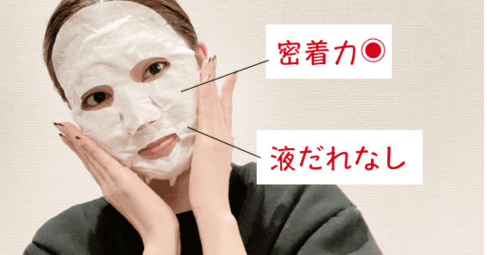

【17skin高濃度炭酸パックの中身】
・A剤(粉末)…2.8g×4包
・B剤(ジェル)…28g×4個
・スパチュラ …1本
・コットンマスク…4枚
自分の肌の悩みを解消したい‥
SNSで話題の「炭酸パック」を使ってみた感想とは？
今はテレワークが中心で、普段は家にいることも多いから、
あまり意識することはなかったけど、久々に化粧をしようと思った時、
鏡に映る自分を見て
<最近の私の肌、なんか違う‥？>
マスク生活や毎日のストレスの影響からか、自分の肌の状態が前より悪くなってきたんじゃないかと感じるようになりました。
さすがにこのままじゃまずいと思い、新しい化粧品を購入することを決意。
WebサイトやSNSで化粧品を調べていたところ、「17skin」という、炭酸パックの文字が目に入った。

17skinは炭酸ガスによるメカニズム研究から生まれた炭酸ガスパックなんだとか。
「高濃度炭酸ガスが角質層まで行き渡ることで、古い角質や油脂などの汚れを
無理なく取り除き、美容液などに溶け込んだ成分を角質層まで届けることができる」、らしい。
なんだか胡散臭かったけど、Webサイトをみる限り、効果を実感している人が多く、
信頼できそうな商品だったので、半信半疑とりあえず購入することにしました。
...
というわけで、早速勢いで注文してみました。
炭酸パックを開けてみると‥？
早速届いた炭酸パックを開けてみると、1回ごとに作るキットタイプ。
1箱に4回分。週に1回なので1ヶ月分です。
STEP1：パック液を混ぜる
まず、付属の粉末とジェルをスパチュラでかき混ぜてパック液を作ります。
ムラにならないようによく混ぜます。
「シュワシュワするのかな？」と思いきや、高濃度炭酸のため音はしないそう！
STEP2:肌にのせる
次はパックが固まらないうちに、スパチュラで顔全体に塗り広げていきます。
肌にのせると、ひんやりしたジェルが気持ちいい〜！一回分の量はたっぷり入っているので、
厚めに塗ってOK。手早く塗るのがポイント！
STEP3:コットンマスクを貼って待つ
顔全体を塗り終えたら、上からコットンマスクを被せます。モチっとしたジェルに
ピタッと密着して、すんなりと貼ることができます。
このまま20〜30分間、パック液が固まるのを待ちます。液だれしてこないので、
スマホを見たり、家事をしたり、自由に過ごします◎

そして時間が経ったらパックをはがします。
ぺろんとキレイにはがれて気持ちいい〜！
パック後は、炭酸のパワーで透明感が‥！肌もうるおいに満たされてモッチモチに！！
化粧水の入りが良くなっている状態なので、そのまま普段のスキンケアをします。
やってみると思っていたより簡単でビックリ！
そして、パック後の肌を見てみると‥?
肌悩みも気にならず、ぱっと明るい肌トーンに！
毛穴の目立ちも気にならなくなって、ゆでたまごのようにつるん！
まるでエステ帰りのようです。
本当に信じられません‥。
化粧品を使って、ここまで感動したのは初めてです。
17skinを買って本当に良かった！！
17skin炭酸ジェルパックは何がすごいの‥？
ここまで17skin炭酸ジェルパックを利用してみての感想を書いてきましたが、
ここからはこの炭酸ジェルパックの何がすごいのかを具体的に説明してみたいと思います。
(ネット上の情報を参考にしながら、自分なりに調べて見ました‥！)
美容成分を贅沢に配合
この炭酸パックには、どうやらこだわりの美容成分が配合されているらしい‥
↓
エステで施術したら1回2万円はかかる高級成分「ヒト幹細胞エキス」をはじめ、
話題の幹細胞エキスが贅沢に3つも配合されているんだとか！
↓
さらに、9種の美容成分もたっぷりと使われています！
年齢肌に必要な成分が入っているから、
他の炭酸パックとは一味違う仕上がりなんですね。

他社製品と比べてもこの違い！
17skin炭酸ジェルパック、恐るべし‥！
信用性は‥？
17skin炭酸ジェルパックにはすごい成分が入っていることは分かったし、
効果も実感できた。
でも、信用性はどうなんだろう‥？
ちゃんと安心して利用できるものなんだろうか‥？
こちらについても調べてみました！
↓
17skin炭酸ジェルパックは、 渋谷スキンクリニック美容皮膚科医、吉田貴子院長が監修されています。
美容の専門家の方が監修されており、安心して利用することができますね！
さらにさらに！多くのインフルエンサーの方達がこぞって使っていて‥
有名誌にも掲載されているんです！！
こりゃすごいよ17skin‥ これから使う化粧水も君に決めた！！
他の人の口コミは‥？
「こんなに効果を実感している人は他にもたくさんいるはず‥！」と思い、
他の人の口コミを見てみると‥
↓↓
「話題の炭酸パック」とSNSで評判が広まるのも納得！
あらゆる美容法を経験してきた人ほど手放せなくなる、高い実感力が人気の秘訣のようです。
気になるお値段は‥？
「17skinって高いんじゃないの?」
そう思われている方がいらっしゃるかもしれません。
しかし！ここまでこの記事を読んでくれたあなたに、お得な情報をシェアします！
通常6578円(税込)ですがなんと！定期コース初回限定で約70%OFFの1,800円(税込1,980円)でGETできちゃうんです！
新しい自分になるための一歩を踏み出そう！
炭酸パックの効果は絶大です。
炭酸パックを使って、ここまで肌の調子が良くなるとは思ってもいませんでした。
「肌ツルツルですね」
「実年齢より若く見えます」
「顔色が明るくなった」
「実年齢より若く見えます」
「顔色が明るくなった」
などなど、たくさんの人から褒められるようになって、
自分に自信が持てるようになりました！
さぁ、みなさんも17skinを使って、理想の自分を手に入れましょう！
使った瞬間、これは！と思いました。気になっていた肌年齢の悩みだけでなく、 毛穴も気にならなくなるのでもう手放せません。(39歳 主婦)
肌の調子が気になるときに使っています。
パックが固まっていく過程でキュッとする感覚がやみつきになります。（54歳 パート）